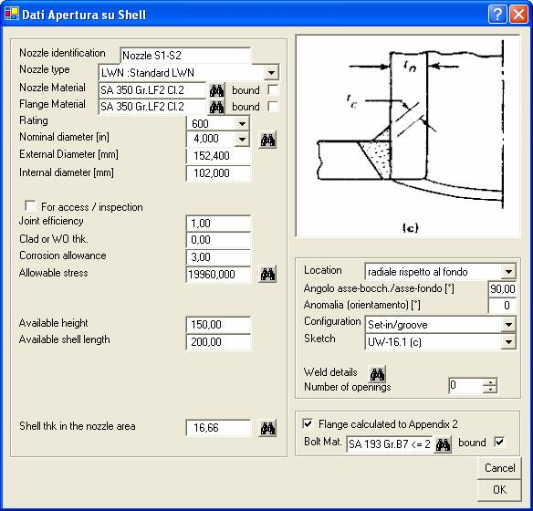

Le aperture sulle membrature a pressione includono i vari tipi di bocchelli con collegamento flangiato e saldato, fino alle semplici forature, equipaggiate di inserto con guarnizione, praticate sui coperchi piani fucinati.
I dati per il calcolo sono imputati in un’unica finestra, il cui aspetto è influenzato dal codice di calcolo applicabile.
Un esempio è qui riportato per ASME VIII div.1

Fornire la lunghezza del rinforzo conteggiata a partire dalla intersezione superficie esterna mantello/superficie interna apertura, e parallelamente all'asse dell'apertura.
Fornire l'ampiezza dell'area disponibile per il rinforzo, contata a partire dalla intersezione superficie esterna mantello/superficie interna apertura, e parallelamente all'asse dell'apertura. Nel caso di bocchelli obliqui fornire l’altezza sulla generatrice più corta.
Questo dato consente di escludere dalla contribuzione al rinforzo aree inesistenti, o esistenti per altri scopi strutturali, quali le flange connesse ai bocchelli. Se si lascia questo dato non compilato l’altezza per il rinforzo sarà pari al massimo consentito dal Codice.
Fornire la lunghezza di mantello disponibile per il rinforzo, contando a partire dal diametro interno dell'apertura. Questo dato consente di escludere dalla contribuzione al rinforzo aree inesistenti, o esistenti per altri scopi strutturali, quali aree di rinforzo per aperture contigue. Se si lascia questo dato non compilato la lunghezza per il rinforzo sarà pari al massimo consentito dal Codice.
Questo dato è richiesto solo in ASME VIII div.2 ed è definito in AD-550.
Fornire l’ampiezza dell'intervallo entro cui può variare la temperatura di esercizio.
Questo dato è applicabile per bocchelli da forgiato con scarpa. Fornire il raggio di raccordo tra bocchello e mantello. Per ASME VIII div.1 il valore minimo ammissibile è 19 mm.
Questo dato è applicabile per aperture con pad integrale. Fornire l'area dei fori per prigionieri eventualmente situati all'interno dell'area di rinforzo."